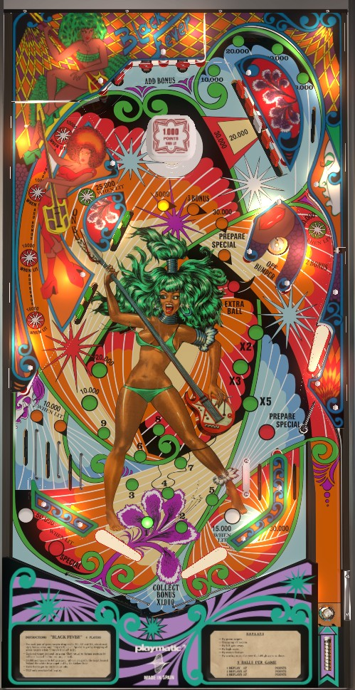

These two games contain the same layout and mostly identical rules. This guide focuses primarily on Black Fever. Rock 2500 features rebalanced (and slightly increased) scoring; details listed below about Rock 2500's scoring are incomplete.
Not to be confused with Black Knight (Williams, 1980), Disco Fever (Williams, 1978), or Rock/Rock Encore (Premier Gottlieb, 1985).
Green drop targets along the left award bonus multipliers. In the upper 5-bank, the center drop target hides a standup which lights the left out lane for 50,000 points (75,000 on Rock 2500); the other drops increase the value of the star rollovers in the left orbit and the lane behind the upper drops. Repeated shots to the saucer score increasing values, up to lighting Special at the left out lane or awarding an instant extra ball. Beware the assymetrical lower flippers.
The below picture of Black Fever's playfield was taken from the VPX recreation by Pedator and JPSalas.

A plunged ball will go across the table and either hit some of the left drop targets, or go around the small u-turn lane that extends behind the upper pair of left drop targets. This u-turn lane turns on the pop bumper, which can be set to either score 100 points/1,000 when lit, or 1,000 points/10,000 when lit. The bumper is turned off by making the saucer on the right. The star rollover within the u-turn lane itself scores 5,000 or 25,000 when lit; completing the entire 5-bank of upper right drops at any time lights the u-turn.
The center drop target in the upper right 5-bank scores 20,000 points (30,000 on Rock 2500). The standup target behind the center drop scores 30,000 (50,000 on Rock 2500) and lights the left out lane for 50,000 points (75,000 on Rock 2500). The other four drop targets in the upper right 5-bank score 5,000 points each. Star rollovers in the left orbit score 1,000 points and a bonus advance when not lit; each non-center drop target down in the upper right bank lights one left star rollover for 10,000 (or 20,000 on Rock 2500) plus the bonus advance instead. Each non-center 5-bank drop target down also adds 10,000 to the value of the upper right loop that extends behind the upper right drops, up to a maximum of 40,000 (the loop scores 500 if no upper right drops are down). The upper right 5-bank does not reset on its own when completed; these drops will only reset by either shooting the upper right loop, or completing both pairs of left drop targets.
Making the right saucer scores and advances the lit value. The first saucer shot on each ball scores 5,000 points, with subsequent shots scoring 3 bonus advances (but no points), then 30,000, then Prepare Special (meaning Special is lit at the left out lane), then Extra Ball, before looping back to 5,000. There appears to be a maximum of 1 extra ball per ball in play. Instinct may tell you to try to dead bounce the kickout from the right saucer, but dead bouncing off the right flipper is likely an instant drain due to this game's assymetrical lower flippers.
Each drop target down in either pair scores 1,000 points. Knocking down both targets in a pair advances the bonus multiplier (2x, 3x, 5x) or lights Prepare Special if 5x bonus is already earned. The only way to reset the left drop targets is to complete both pairs, which causes all left and upper right drop targets to reset. Completing both pairs of left drop targets again when Prepare Special is lit scores a Special, which can be set to score a free game or an extra ball, but not points.
The two drop targets in the lower pair correspond to the two left in lanes; when one of these targets is down, the corresponding left in lane will be lit for 10,000 points (20,000 on Rock 2500) instead of 2,000. The lowest drop target corresponds to the far left in lane, and the target above it corresponds to the near left in lane. Resetting the left drop targets unlights the left in lanes.
Advancing the bonus multiplier to 2x increases the left in lane value from 5,000 points to 15,000 (25,000 on Rock 2500). This lane always awards 1 bonus advance.
Advancing the bonus multiplier to 3x increases the value of the star rollover behind the right saucer from 5,000 points to 30,000. This star rollover always awards 2 bonus advances.
Score 1,000 points and a bonus advance.
Black Fever/Rock 2500 has absolutely no slingshots. There are 2 in lanes on the left, and one on the right. Scoring for the in lanes is described in the Left drop targets section above, as these lanes' values are dependent on the left drop targets and the bonus multiplier. The left out lane scores 20,000 when unlit, but can be lit for 50,000 (or 75,000 on Rock 2500) by hitting the standup target behind the center drop target of the upper right 5-bank, and it can separately be lit for Special by making the right saucer 4 times in one ball. The right out lane scores 30,000 (or 35,000 on Rock 2500) and has no additional scoring features.
The top standup targets, any left star rollover, and any in lane award 1 bonus advance. The right star rollover awards 2 bonus advances. The 2nd, 7th, etc., saucer award on one ball is 3 bonus advances. Bonus multiplier is earned by completing a pair of left drop targets, and advances in the sequence 2x-3x-5x. Max bonus is 5x 29,000 = 145,000 points. There is no way to hold any part of the bonus from one ball to the next, and there is no way to collect any part of the bonus mid-ball. The bonus value and multipliers appear to be unchanged on Rock 2500, making the end of ball bonus less meaningful when compared to the rest of the game's increased scoring.
Special can be set to score a free game or extra ball, but it appears that neither extra ball nor Special can be set to award points for competition/novelty play.
In a multiplayer game, Black Fever can be set to either "alternating play", where players take turns, or "continuous play", where a player plays all 3 or 5 of their balls consecutively before control passes to the next player.
Specials can be open ended, or set up so that each player can only earn 1 replay per game, with all other Specials awarding extra ball instead.